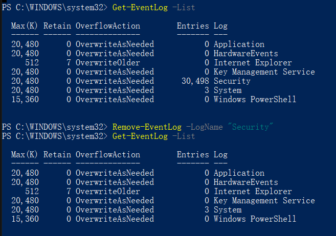

Win 10
Clean log files
C:\Windows\System32\winevt\Logs
按Ctrl+A全选后使用 Shift + Delete 删除，一些正被services使用的文件无法被删除。
Open Administrator Powershell：1
2Get-EventLog -List
Remove-EventLog -LogName "some Log from list"

禁用休眠
休眠会将系统内存保存到磁盘文件hiberfil.sys中。可以通过1
powercfg /hibernate off
关闭休眠功能
Linux
Refer to https://billystudio.github.io/2018/05/16/Command-of-the-day-May-sixteenth-2018/